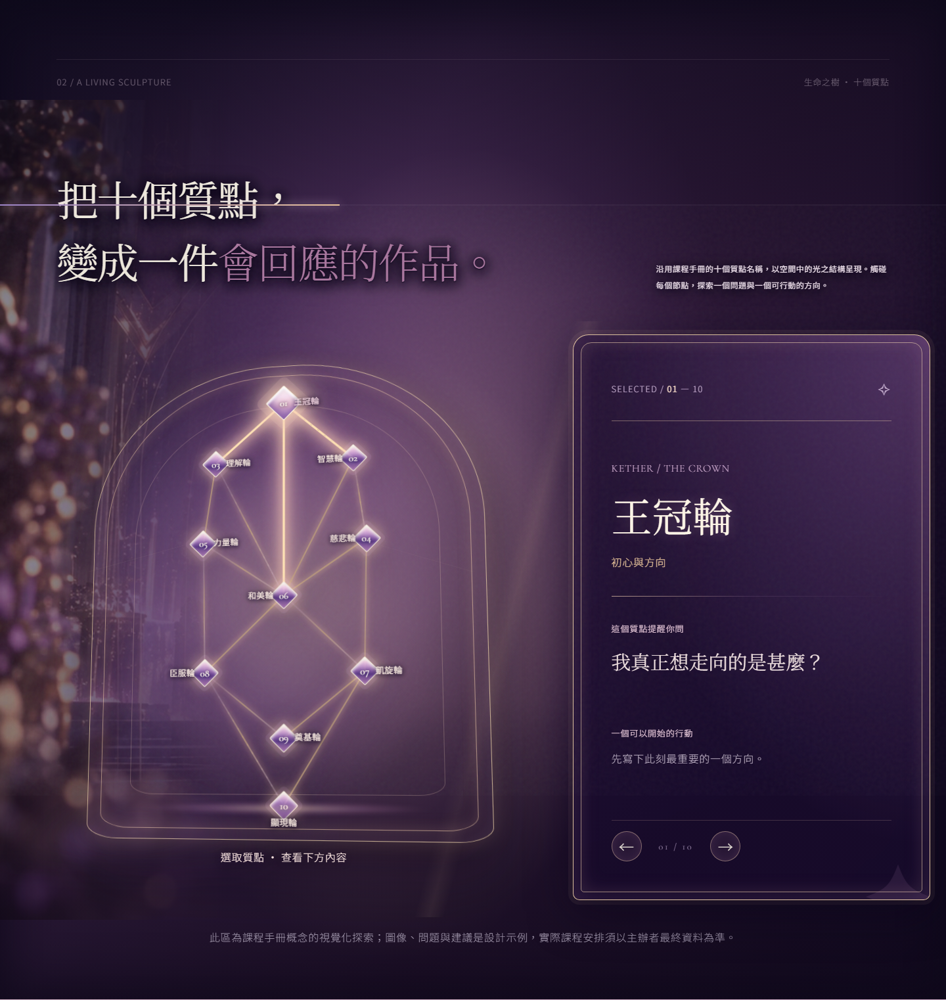
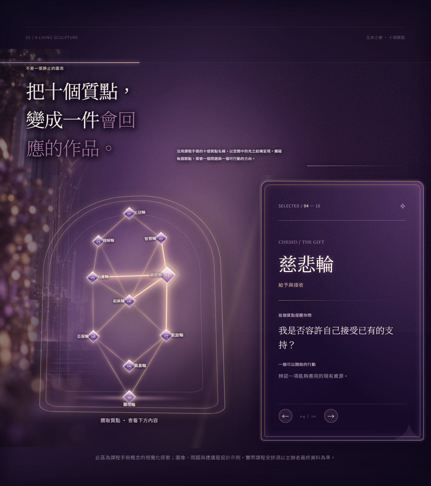
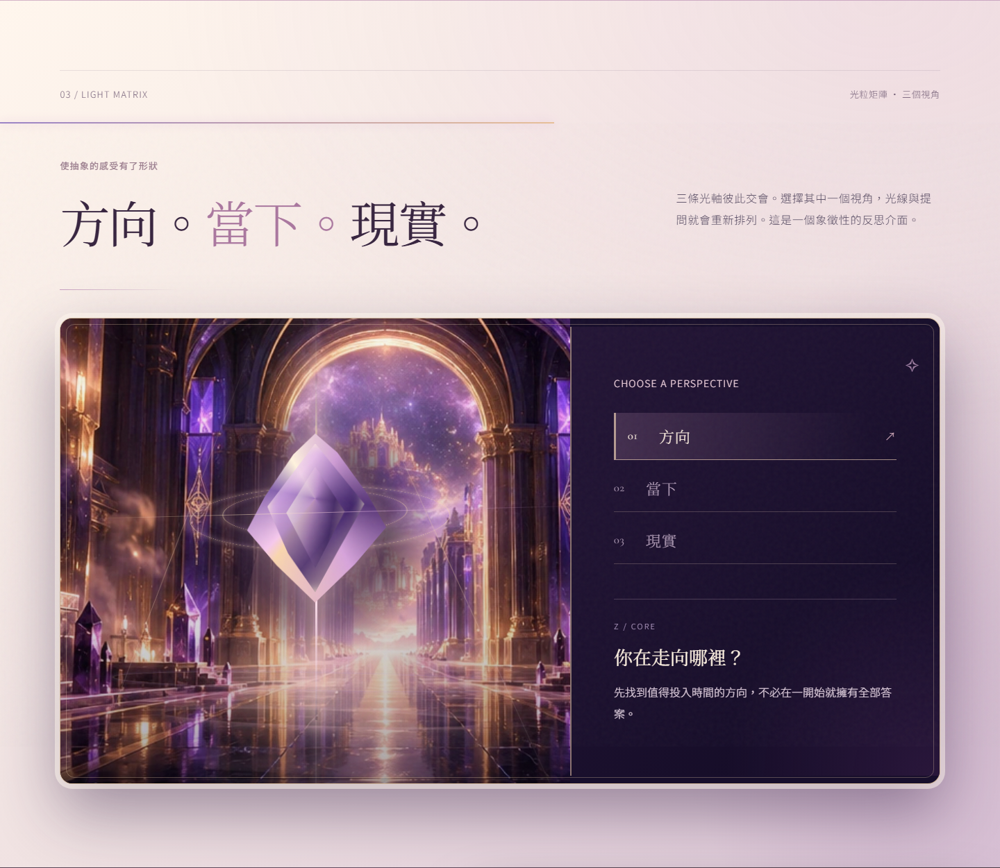
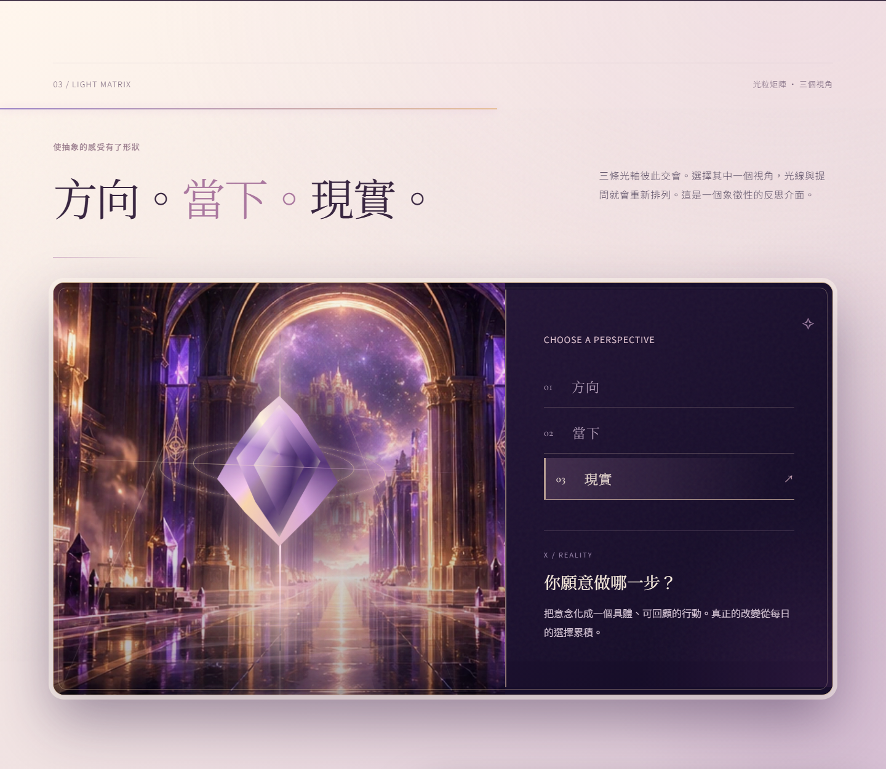

實際動態紀錄
以下約 8 秒短片由 MSI 本機 Headless Chrome 真網頁逐幀擷取，再用現有 FFmpeg 編碼。係快速驗收預覽，播放幀率低於實際瀏覽器；最準確仍然係點上方真頁實際操作。
調整嘅三個層次
**章節進場**：門廊更有光線進深；生命之樹與矩陣用一次性光線接力引導視線。**互動回應**：揀十個質點出現一次性光暈脈衝；Matrix 切換三軸時有短促折射回饋。**停留節奏**：Winnie 金框、真實照片只喺進場時微動；離開視窗嘅部分裝飾動畫會暫停，減少後台運算。
動作只用 transform / opacity 等適合合成層嘅動畫；手機唔做 pointer parallax，系統設定減少動畫時會停用新增動畫，所有文字照常可讀。
Tree：R9 與 R10 真網頁外觀


Matrix：保留真晶體與三軸

